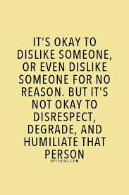

When you are on social media can people sometimes be a little mean? Well, according to tests run through professionals, the conclusion is that people think that it is okay to say mean things because they will never meet the person in real life. Many of these people on social media who seem to be mean, are not.


When humans talk face to face it is common for them to give a good first impression. Because people who post normally never meet their haters face to face they think that they will never have to feel guilty and apologize. According to tests ran from a Psychology/Human Science program, BrainChild. Humans personality changes if they will meet who they are criticizing.
The tests ran by BrainChild included test subjects who would rate someones "audition" for singing. The first group was told they would meet the audition. They all gave her scores of 4 and 5 with very nice comments. In the second group the test subjects were told that they would not meet the audition. They rated the audition with 1 and 2 out of 5. They also put rude comments like" bad money", and "get some help", thinking they would not have to read their comments to her. When the audition did walk in the room to listen to group 2's comments some of the critics regretted their comments, or did not read it word for word. One even admitted they didn't want to be mean to the audition.
 click on this image to watch the video!
click on this image to watch the video!In this article we have learned that humans follow their nature to give a good first impression when face to face. But we also tend to be mean if we think that we will never have to meet the person we criticize in person.
Bibliography: BrainChild ... This content is not a liable source, do NOT use for any informational writing pieces